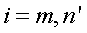

Modifies current distribution data.
Syntax
MODIFY [ m m' n n' [ a b ] ] [ 'flabel' ]
fcn
[ m m' n n' [ a b ] ]
fcn
:
| Option | Description |
|---|---|
| m m' | integer pixel ranges in the across direction |
| n n' | integer pixel ranges in the down direction |
| a b | scale factors |
| fcn | internally or user-defined function |
| 'flabel' | optional text to relabel the functional data |
Remarks
- Modifies the data region specified by the
two integer pixel ranges, m to m' (across) and
n to n' (down). The data in that region is
replaced by a plus b times the data value,
that is:

- Alternatively, an intrinsic or extrinsic
function may be used to modify the data according to the equation:
 - The function name fcn is either internal or user-defined via $FCN.
- More complex modifications can be done with multiple commands.
- Use the 'flabel' option to relabel the functional data.